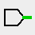
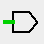
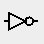
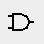

Toolbars
Logisim-evolution has several toolbars. The main toolbar is configurable and provides quick access to the most used tools. These are also always available in the navigation pane.

The bar in "Drawing" mode

The bar in "Appearance" mode
And finally two more bars appear depending on the status of the navigation panel. They are presented below.


The main toolbar
This toolbar with two presentations (see above) according to the editing mode chooses "Drawing" or "Appearance"
The bar in the mode "drawing"
In the "Drawing" mode it is customizable using the | Projet |→| Options |menu tab | Barre d'outils | The configuration is presented by the page on The Toolbar tab. Below we briefly present the default tools in the bar. There are many other components to build circuits. You will find a lot more information about all the tools in the Library Reference

|
Poke tool : Ctrl-1 This tool allows you to interact with the simulation components. For example if you pushon a circuit connection it will switch from one state to another or if pushon a cable you can know the value of the signals transported. More information on the link poke from the library base |

|
Selection tool : Ctrl-2 This tool is particularly useful when designing circuits, it allows to ask, move or select the elements. It is also used to wire the circuit. More information on the link select from the library base |
| Wiring tool : Ctrl-3 This tool allows you to place cables on the diagram. | |

|
Text Tool : Ctrl-4 This tool makes it possible to place text on the drawings and to modify the labels of the components. More information on the link Text from the library base |
|   | Pin Tool broche : Ctrl-5 / 6 This tool makes it possible to place connection pins on the diagram. The connections are of two types: input or output. They are presented in this page Pin from the library Wiring |
|   | Tools Not,And,Or... : Ctrl-7 / 8 / 9 / 0 These tools make it possible to place the basic logic gates on the drawing. Logic gates are presented in the Gates library |
The bar in mode "Appearance" mode
In this mode or we can edit the symbol of a sub-circuit. the bar offers drawing tools. You will find a little more information on the use in Editing subcircuit appearance
|
|
Selection Tool : Select, move, copy, paste the symbols. |
|
|
Text Tool : Insert or edit a text. |

|
Line Tool : Creates a line segment. |

|
Curve tool: Create a Bezier curve. The first click and drag specifies the beginning of the line, the second click and drag ends the line and sets the curvature. A click on the line shows you the three control points. Schift and click on central control point impose a symmetrical curve. Alt click on center point draws the curve through the control point (under the mouse). |

|
Polylines tool Creates a sequence of connected lines, each click starts a new line. A double-click ends the sequence. |

|
Rectangle tool Create a rectangle or a square ( Shift ) by dragging from an angle to the opposite corner. |

|
Round Rectangle tool : Creates a rectangle or square with a rounded edge (Maj) dragging from an angle to the opposite corner. |

|
Oval tool Creates an oval or circle ( Shift ) by dragging from an angle to the opposite corner. |

|
Polygon tool Create a polygon, each click starts a new face. A double-click ends the sequence. |
The navigation panel tabs toolbar
This toolbar area displays two bars depending on the tabs of the program. The first has four buttons and is displayed when the program is in "drawing" mode. These are shortcuts to some of the menu submenu | Project |.

|
Add a circuit : Adds a new crcuit to our projects. |
| VHDL:Add a new VHDL circuit to our projects. | |
| Bring up the circuit in the project hierarchy. | |
| Bring down the circuit in the project hierarchy. | |

|
Edition mode: Toggles from schema mode to appearance edit mode alternately. |
| Deletes a circuit in the project hierarchy. |
The second is displayed when the program is in the simulation tree view. These are shortcuts to some of the menu submenus | Simulate |
| Enabled/disabled : Ctrl-E Enabled/disabled the simulation. | |
| Step simulation : Ctrl-I Take a step forward in the simulation. | |
| Activate/deactivate tick : Ctrl-K Enable or disable clock operation. | |
| Tick once : Ctrl-T Advance the clocks of a tick. | |
| Tick once : F2 Advance the simulation of a clock cycle. |
You will find more information in The Simulate menu
Next: The attribute table.